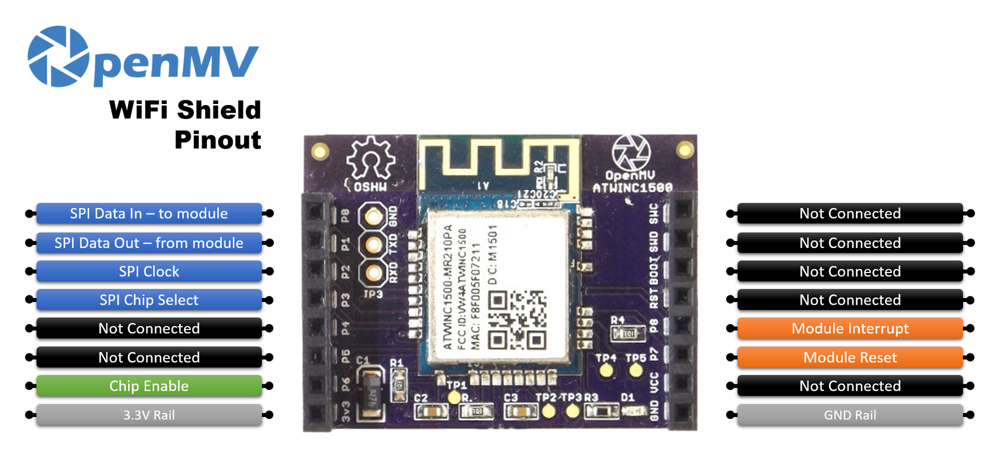

WiFi Shield¶
Le WiFi Shield ajoute le Wi-Fi 2,4 GHz aux OpenMV Cams dépourvues de connectivité réseau intégrée, en utilisant le module Atmel WINC1500. Il se branche sous le connecteur de n’importe quelle OpenMV Cam.

Pour la fiche technique complète, les photos et les commandes, consultez la page produit du WiFi Shield.
Note
Pris en charge uniquement sur l’OpenMV Cam, M4, M7, H7 et H7 Plus.
Points forts¶
Wi-Fi 2,4 GHz b/g/n via le module Atmel WINC1500
Crypto matérielle TLS 1.2 pour HTTPS / MQTTS
Brochage¶
{kind=link}

Référence des broches¶
Broche |
Fonction |
|---|---|
P0 |
SPI MOSI — données vers le module WINC1500 |
P1 |
SPI MISO — données depuis le module WINC1500 |
P2 |
Horloge SPI |
P3 |
Sélection de puce SPI |
P6 |
Activation de la puce |
P7 |
Reset du module |
P8 |
Interruption du module |
Rail 3,3 V |
Alimente le module WINC1500 |
Rail GND |
Masse commune |
Utilisation¶
Pilotez le shield via la classe network.WINC. Dans le mode station par défaut, connectez-vous à un réseau Wi-Fi et affichez l’adresse IP attribuée:
import network
import time
SSID = "your-network"
KEY = "your-password"
wlan = network.WINC() # station mode by default
wlan.connect(SSID, KEY)
while not wlan.isconnected():
print("connecting...")
time.sleep_ms(1000)
print("Wi-Fi IP:", wlan.ifconfig()[0])
Le shield peut aussi fonctionner comme point d’accès Wi-Fi — passez MODE_AP au constructeur et appelez start_ap() pour activer le point d’accès:
import network
wlan = network.WINC(network.WINC.MODE_AP)
wlan.start_ap("openmv-cam", security=network.WINC.OPEN)
print("AP IP:", wlan.ifconfig()[0])
Note
L’implémentation du point d’accès du WINC1500 n’accepte qu’un seul client à la fois et ne prend en charge que les modes de sécurité OPEN et WEP.
Le micrologiciel propre au WINC1500 peut être inspecté et mis à jour depuis la caméra. Affichez la version du micrologiciel en cours d’exécution avec:
import network
wlan = network.WINC()
print("Firmware version:", wlan.fw_version())
La dernière image stable (winc_19_7_6.bin) est livrée avec l’OpenMV IDE dans <openmv-ide-install-dir>/share/qtcreator/firmware/WINC1500/ et n’est compatible qu’avec le matériel ATWINC1500-MR210PB le plus récent. Pour la flasher, copiez le .bin sur la carte SD de la caméra, éjectez la carte pour vider le cache FAT, réinitialisez la carte, puis exécutez:
import network
wlan = network.WINC(mode=network.WINC.MODE_FIRMWARE)
wlan.fw_update("winc_19_7_6.bin")
fw_dump() relit l’image actuelle vers un fichier de la même manière. Consultez la classe network.WINC pour la liste complète des méthodes.